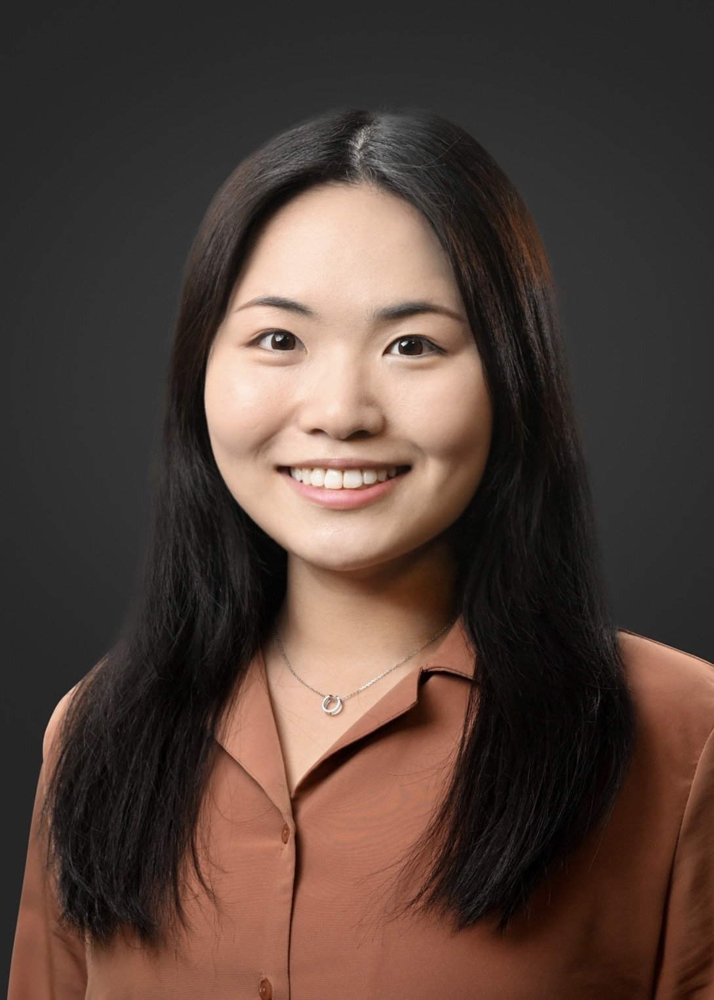

I am an analyst at Balyasny Asset Management. My focus is quantitative research for global macro products.
Previously, I received my PhD in Computer Science at University of California, Berkeley, advised by Michael I. Jordan. My academic research lie at the intersection of machine learning, statistics and economics, in particular building machine learning systems that are robust, distributed, and responsive to the evolving social and economic contexts. During my study at Berkeley, I was part of Berkeley AI Research (BAIR), the CLIMB Center, and RISE Lab. I was a recipient of the Google Ph.D. Fellowship in Algorithms, Optimizations and Markets and a Berkeley Graduate Fellowship.
Prior to Baly, I was fortunate to intern at Millennium Management, Google Research Brain team, Microsoft Research and CNN Digital. I received my BSc majored in Physics, Mathematics, Computer Science from Hong Kong University of Science and Technology (with first class honors).
I am passionate about understanding global changes and contributing technology to the world. In my spare time I enjoy reading, photography and acropilates. I was born and grew up in Beijing, China.